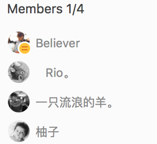
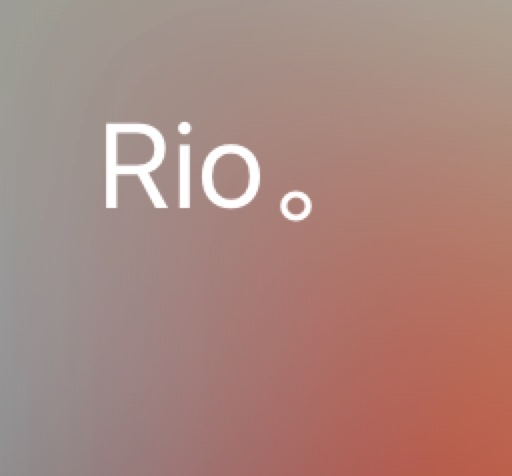

前端学习机
- 

为什么会变成变成这样呢……第一次从零开始学习前端。第一次有了能和一群人重新学习的机会。两件快乐的事情重合在一起。 而这两份快乐，又能给我带来更多的快乐。得到的，本该是像梦境一般快速的发展……但是，为什么，会变成这样呢……
为什么你会这么熟练啊，你练了前端多少遍啊！
CSS浮动定位什么的，已经无所谓了。 因为已经不再有网页，值得去构建了。 传达不到的REVIEW，已经不需要了。 因为已经不再有人，值得去关注了。
HTML/CSS/JAVASCRIPT，那是悲喜交加永远的瞬间